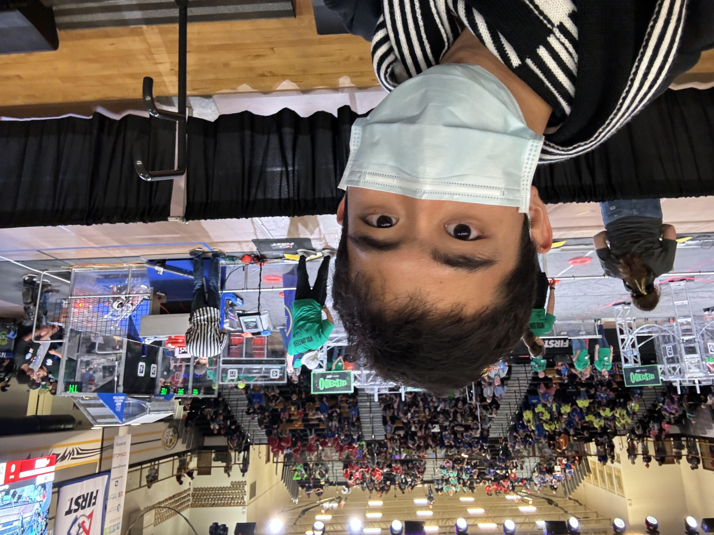

01 PYTHON + STREAMLIT
AlgorBuddy
A Socratic programming partner that uses Claude Sonnet 4.6 to guide users toward solving code bugs without revealing the answer.
View projectWeb development student 2026
I am Burton, a curious developer learning to turn thoughtful ideas into useful digital experiences.
See my workScroll to explore
I am currently studying web development and collecting the lessons, experiments, and small wins that come with learning something new.
My favorite work sits where clear design meets simple code. This site will grow alongside my skills throughout the course.
Get in touch

Tools, community projects, and experiences built for real people.
01 PYTHON + STREAMLIT
A Socratic programming partner that uses Claude Sonnet 4.6 to guide users toward solving code bugs without revealing the answer.
View project02 WEB APP
A campus lost and found app designed specifically for UIUC students.
View project03 ORGANIZATION WEBSITE
The main website for the TSA RSO at UIUC, where students can explore the organization and attend events.
View project